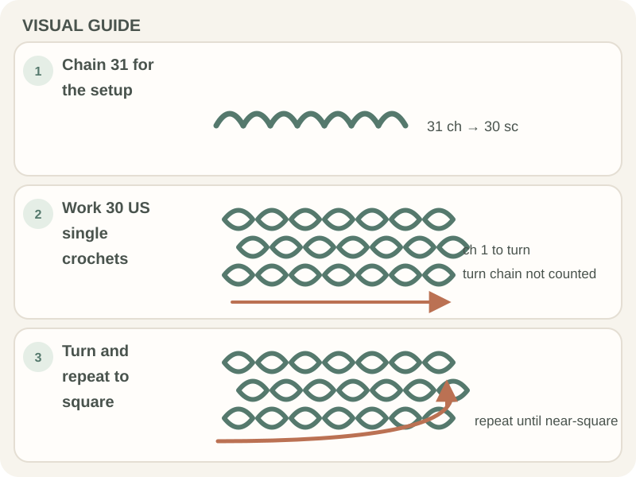

Beginner Projects · Beginner guide
How to Crochet a Simple Dishcloth
A basic dishcloth is a small rectangle worked in washable yarn; use the pattern’s fiber and care instructions for its intended use.

Cotton is common for dishcloths because it is absorbent, but blends and care needs vary. This page outlines a simple rectangle rather than a fixed stitch-count pattern.
Before you begin
Choose washable yarn and a hook suited to its label or pattern. A stitch marker can help identify the first stitch at each row edge.
Step-by-step instructions
Here is a small US single-crochet rectangle; adjust its dimensions only after checking a swatch.
- With washable yarn, chain 31.

Real crochet photograph by Miriam Alonso via Pexels. - Row 1: single crochet in the second chain from the hook and in each chain across (30 stitches).
- Chain 1, turn, and single crochet in the first stitch and across. The chain does not count as a stitch; keep 30 stitches in each row.
- Repeat Row 2 until the cloth is close to square, then fasten off and weave in the ends.

How to check your work
The cloth should lie reasonably flat and have consistent row counts. If it narrows or widens, find the missed or extra edge stitch before working more rows.
Common beginner problems
- The cloth curls at the edges: Check the stitch count, tension, and whether the pattern calls for a border.
- The fabric is too loose for its purpose: Try a denser stitch or smaller hook in a new swatch, then check the drape.
- The cloth shrinks after washing: Follow the fiber’s care label and wash a swatch before making several.
Fiber and washing
Cotton is often selected for absorbency, but the yarn label determines care. Wash and dry a swatch before committing to a larger batch; do not assume every cotton blend behaves the same way.
Frequently asked questions
Is cotton required?
No, but it is a common choice for absorbency. Follow the pattern and care label.
How many chains should I make?
Use a pattern stitch count or swatch to reach your chosen width; yarn and tension change the count.
Can I put a crochet dishcloth in the dryer?
Check the label. Care varies by fiber and blend.